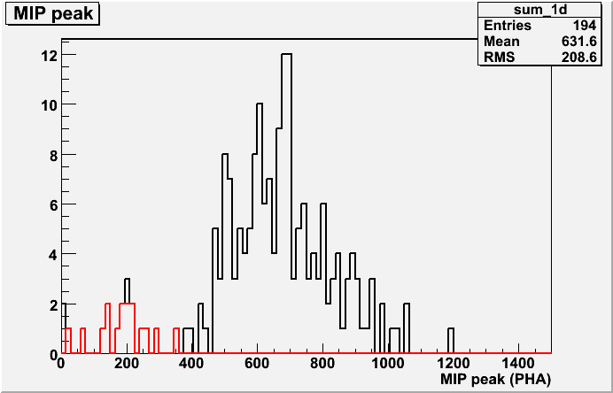
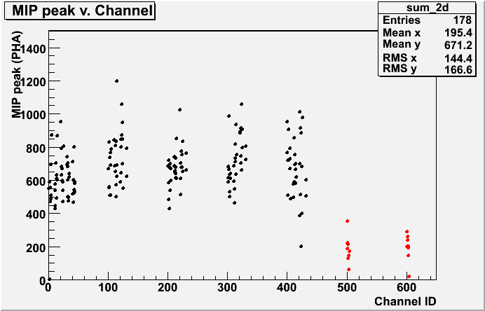
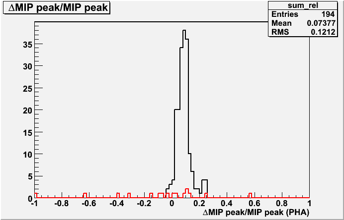
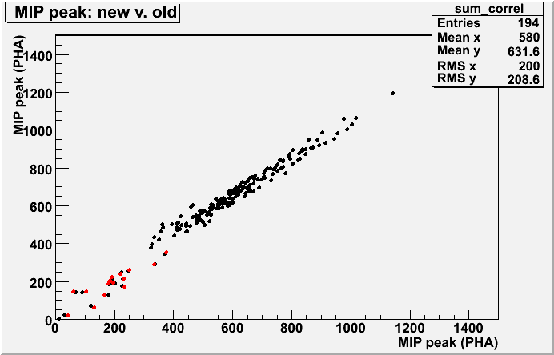

ACD_Gain Calibration r0250381744_gain
Input:
Files:
-
Type: Pedestal. Path: /afs/slac.stanford.edu/g/glast/ground/releases/monitor//ACD/FLIGHT/Ped/081208/r0250381744_ped.xml
- Type: Svac. Path: root://glast-rdr.slac.stanford.edu//glast/Data/Flight/Level1/LPA/prod/1.69/svac/r0250381744_v000_svac.root
- Type: Svac. Path: root://glast-rdr.slac.stanford.edu//glast/Data/Flight/Level1/LPA/prod/1.69/svac/r0250387900_v000_svac.root
- Type: Svac. Path: root://glast-rdr.slac.stanford.edu//glast/Data/Flight/Level1/LPA/prod/1.69/svac/r0250393965_v001_svac.root
- Type: Svac. Path: root://glast-rdr.slac.stanford.edu//glast/Data/Flight/Level1/LPA/prod/1.69/svac/r0250399977_v000_svac.root
- Type: Svac. Path: root://glast-rdr.slac.stanford.edu//glast/Data/Flight/Level1/LPA/prod/1.69/svac/r0250405966_v001_svac.root
Time Span (MET seconds): 250381746.9232 - 250410431.0866
Triggers used: 7462018
Use History
- Set as reference on Mon Jan 12 18:30:51 2009
- Set to use in making calibration on Mon Jan 12 18:41:52 2009
- Added to moot on Tue Jan 13 10:41:09 2009: Submitted with JIRA OBCONF-96
- Added to offline on Tue Jan 13 11:03:01 2009: Submitted with JIRA SSC-172
Output:
Summary Plots


Plots with respect to reference calibration


Reference Calibration
/afs/slac.stanford.edu/g/glast/ground/releases/monitor//ACD/FLIGHT/ElecGain/080721/r0238287709_gain.xml
Files:
-
Type: Pedestal. Path: /afs/slac.stanford.edu/g/glast/ground/releases/monitor/ACD/FLIGHT/Ped/080727/r0238889845_ped.xml
- Type: Svac. Path: root://glast-rdr.slac.stanford.edu//glast/Data/Flight/Level1/LPA/prod/1.61/svac/r0238287709_v000_svac.root
- Type: Svac. Path: root://glast-rdr.slac.stanford.edu//glast/Data/Flight/Level1/LPA/prod/1.61/svac/r0238293794_v001_svac.root
- Type: Svac. Path: root://glast-rdr.slac.stanford.edu//glast/Data/Flight/Level1/LPA/prod/1.61/svac/r0238299817_v000_svac.root
- Type: Svac. Path: root://glast-rdr.slac.stanford.edu//glast/Data/Flight/Level1/LPA/prod/1.61/svac/r0238305783_v001_svac.root
- Type: Svac. Path: root://glast-rdr.slac.stanford.edu//glast/Data/Flight/Level1/LPA/prod/1.61/svac/r0238311727_v000_svac.root
Time Span (MET seconds): 238287711.9731 - 238316023.0863
Triggers used: 8032974
Comments
- Report made at 2008-12-20 01:58:10 UTC by user echarles